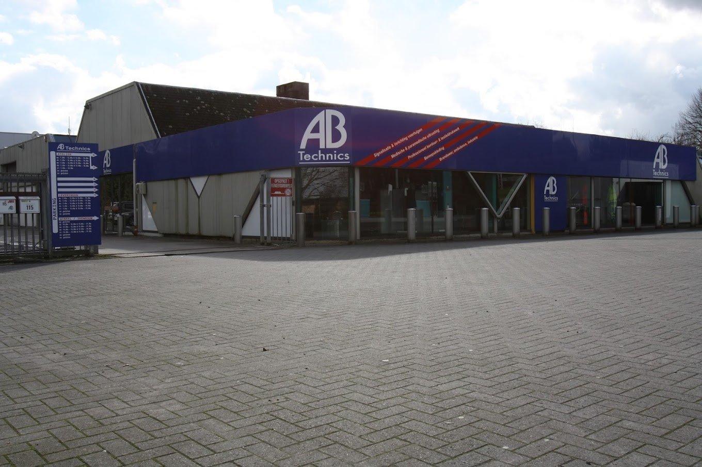

AB technics
AB technics is een bedrijf die de focus legt op het bouwen van prioritaire voertuigen en het verkoop van producten die gebruikt worden door prioritairevoertuigen. Maar daarnaast doen ze ook nog andere dingen om een centje bij te verdienen zoals: ombouwen van voertuigen voor bedrijven en borduren van werkkleding. Een paar jaar geleden was het enige wat met IT te maken had in dit bedrijf een acces database die al heel oud was. Maar sinds toen zijn ze heel hard gaan werken aan het automatiseren en alles makkelijker maken doormiddel van IT. Ondertussen is bijna alles gedigitalisseerd en zijn ze zelfs bezig met te zorgen dat je doormiddel van qr-codes alle producten exact kunt zien waar ze zijn en of ze nog ergens voor nodig hebben.
Het bedrijf blijft steeds maar groeien het heeft momenteel 1 locatie en 17 mensen in dienst. Maar dit gaat komende tijd nog serieus groeien want ze willen tegen het einde van het jaar 3 verschillende locaties hebben.